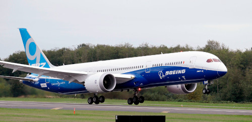

| Airbus A330-900neo | Boeing 787-9 |
|---|---|
The Airbus A330-900neo (standing for New Engine Option) was first released in 2018 by airplane manufacturer Airbus. The plane is a wide-body jet, meaning it is configured with two aisles and three seat groups (in Economy class, the A330-900neo uses a 2-4-2 setup). Delta Air Lines is the largest A330-900neo operator, with 27 currently in service. The main competitor of the A330-900neo is the Boeing 787-9 (compared here). |
The Boeing 787-9 was first released in 2011 by airplane manufacturer Boeing. The plane is a wide-body jet, meaning it is configured with two aisles and three seat groups (in Economy class, the 787-9 uses a 3-3-3 setup). All Nippon Airways (Japan) is the largest 787-9 operator, with 42 currently in service. The main competitor of the Boeing 787-9 is the Boeing A330-900neo (compared here). |
|  | |
| Facts | Facts |
|
|
| More Information | More Information |